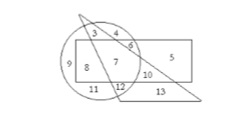

1. Lo opuesto al odio es:
a) enemigo
b) temor
c) amor
d) amigo
e) alegría
2. Si tres lápices cuestan cinco pesos ¿Cuántos lápices podré comprar con cincuenta pesos?
a) 230
b) 30
c) 20
d) 15
e) 50
3. Un pájaro no siempre tiene:
a) alas
b) ojos
c) patas
d) nido
e) pico
4. Lo opuesto a honor es:
a) derrota
b) villanía
c) humillación
d) cobardía
e) miedo
5. El zorro se parece más
a) el lobo
b) la cabra
c) el cerdo
d) el tigre
e) el gato
6. El silencio tiene la misma relación con el sonido que la oscuridad con:
a) sótano
b) luz
c) ruido
d) quietud
e) noche
7. Un grupo consistía en dos matrimonios, dos hermanos y dos hermanas ¿Cuál es el número mínimo de personas que podrían componer el grupo?
a) 15
b) 20
c) 2
d) 8
e) 4
8. Un árbol siempre tiene:
a) hojas
b) fruto
c) yemas
d) raíces
e) sombra
9. Lo opuesto de lo económico es:
a) barato
b) avaro
c) gastador
d) valor
e) rico
10. La plata es más cara que el hierro porque es:
a) más pesada
b) más escasa
c) más blanca
d) más dura
e) más hermosa
11. ¿Cuál de las seis razones expresa el significado del refrán?: “Comida hecha compañía desecha”
a) No hay que separarse de los amigos después de comer
b) No se debe olvidar el beneficio recibido y alejarse de aquél de quien se recibió
c) A nada conduce prolongar demasiado un asunto
d) La mayor dificultad en cualquier cosa consiste, por lo común en los principios
e) Es peligroso prolongar la sobremesa
f) Cada uno debe mirar antes por sí mismo que por los otros
12. ¿Cuál de las seis razones dadas en el No. 11 expresa el significado de este proverbio?: “Obra empezada, medio acabada”
a) más pesada
b) más escasa
c) más blanca
d) más dura
e) más hermosa
13. ¿Cuál de las seis razones, dadas en el No. 11, explica el proverbio “Antes son mis dientes que mis parientes.”?
a) a
b) b
c) f
d) e
e) c
14. Una luz eléctrica se relaciona con la bujía (vela de alumbrar) como un automóvil se relaciona con:
a) un carruaje
b) la electricidad
c) una llanta
d) la velocidad
e) el resplandor
15. Si un caballo puede correr a la velocidad de 6 metros en un ¼ de segundo ¿Cuántos metros corre en 10 segundos?
a) 300
b) 200
c) 500
d) 240
e) 150
16. Una comida siempre supone:
a) mesa
b) plato
c) hambre
d) alimento
e) agua
17. De las cinco palabras siguientes cuatro son parecidas ¿Cuál es la que no es parecida a esas cuatro?
a) postre
b) lima
c) pato
d) papel
e) claro
18. Lo opuesto a nunca es:
a) a menudo
b) a veces
c) frecuentemente
d) siempre
e) de vez en cuando
19. Un reloj tiene con el tiempo la misma relación que un termómetro con:
a) un reloj
b) caliente
c) tubo
d) mercurio
e) temperatura
20. Cuál de las siguientes palabras debería ponerse en el espacio en blanco para que sea cierta la afirmación “_____________ los hombres son más bajos que sus esposas”
a) siempre
b) a menudo
c) a veces
d) raras veces
e) nunca
21. En la siguiente serie hay un número equivocado ¿Cuál debería ocupar su lugar?
1 - 4 - 2 - 5 - 3 - 6 - 4 - 7 - 5 - 9 - 6 - 9
a) 4
b) 5
c) 9
d) 8
e) 6
1
22. Si las dos primeras proposiciones son ciertas la tercera es:
a) verdadera
b) falsa
c) dudosa
23. Una lucha siempre tiene:
a) réferi
b) contendientes
c) espectadores
d) aplausos
e) victoria
24. ¿Cuál de los números de esta serie aparece antes por segunda vez?
6 - 4 - 5 - 3 - 7 - 0 - 9 - 5 - 9 - 8 - 8 - 6 - 5 - 4 - 7 - 3 - 0 - 8 - 9
a) Marte
b) el sol
c) las nubes
d) las estrellas
e) el universo
25. La luna se relaciona con la tierra como la tierra con:
a) 8
b) 4
c) 5
d) 0
e) 6
26. ¿Qué palabra hace falta para que sea verdadera la siguiente proposición? “Los padres son ____________ más prudentes que los hijos”
a) siempre
b) usualmente
c) mucho
d) raras veces
e) nunca
27. Lo opuesto a torpe es:
a) fuerte
b) bonito
c) corto
d) hábil
e) rápido
28. “Una madre siempre es___________ que su hija”
a) más sabia
b) más alta
c) más gruesa
d) más vieja
e) más arrugada
29. Cuál de las cinco proposiciones indica el significado del proverbio “Haz bien y guárdate”?
a) El bien ha de hacerse desinteresadamente
b) Nunca se hace el bien sin ningún provecho
c) Hay que obrar bien y no publicarlo
d) Hay que hacer el bien al enemigo
e) Los ingratos pagan con malas obras el bien que se les hace
30. ¿Cuál de las proposiciones del No. 29 explica el proverbio: “Haz bien y no mires a quien”?
a) A
b) B
c) C
d) D
e) E
31. ¿Cuál de las proposiciones del No. 29 explica el proverbio: “Haz buena harina y no toques bocina”?
a) A
b) B
c) C
d) D
e) E
32. Cuando un individuo enajena su propiedad es porque:”
a) la compra
b) la vende
c) la devuelve
d) la presta
e) la regala
33. ¿Qué se relaciona con enfermedad, como cuidado se relaciona con accidente?
a) doctor
b) cirugía
c) medicina
d) hospital
e) salubridad
34. De estas cinco cosas, cuatro son parecidas en algo. ¿Cuál es la que no pertenece a ese grupo?
a) contrabando
b) robo
c) calma
d) estafa
e) venta
35. Si diez cajas llenas de manzanas pesan cuatrocientos kilogramos ¿Cuánto pesan sólo las manzanas, si cada caja pesa 4 kilogramos vacía?
a) 360
b) 250
c) 100
d) 520
e) 220
36. Lo opuesto de esperanza es:
a) fe
b) desaliento
c) tristeza
d) desgracia
e) odio
37. Si todas las letras que ocupan números impares se cruzaran ¿Cuál sería la décima letra no cruzada (No haga marcas en el alfabeto)
ABCDEFGHIJKLMNÑOPQRSTUVWXYZ
a) Q
b) S
c) O
d) Z
e) P
38. ¿Qué letra en la palabra METACRÓMICO, ocupa el mismo lugar, contando desde el principio en dicha palabra y en el alfabeto? (no cuente la Ch, como letra).
a) M
b) A
c) I
d) O
e) Ó
39. Lo que la gente dice de una persona constituye su:
a) carácter
b) murmuración
c) reputación
d) disposición
e) personalidad
40. Si 2 ½ mts. de tela cuestan 30 pesos ¿Cuánto cuestan 10 metros?
a) 120
b) 220
c) 10
d) 25
e) 50
41. Si las palabras siguientes se ordenaran para formar una oración ¿Con que letra comenzaría la tercera palabra de dicha proposición? (escriba la letra con mayúscula en la hoja de respuestas).
bajo, contrario, significa, que, lo, alto.
a) A
b) Q
c) L
d) C
e) B
42. Si las primeras dos proposiciones son verdaderas, la tercera es:
a) verdadera
b) falsa
c) dudosa
43. Suponiendo que en la palabra CONSTITUCIONAL, la primera y la segunda letras se intercambiara y también la 3ª con la 4ª y la 5ª con la 6ª, etc. escriba (en mayúsculas de imprenta) la letra que en el caso sería la 12ª contando de izquierda a derecha.
a) O
b) I
c) U
d) A
e) N
44. Un número está equivocado en la siguiente serie ¿Cuál debe ir en su lugar?
0 -1 – 3 -6 – 10 -15 – 21 – 28 - 34
a) 30
b) 25
c) 56
d) 85
e) 36
45. Si cuatro y medio metros de tela cuestan 90 pesos ¿Cuántos pesos costarán 2 ½ metros?
a) 80
b) 55
c) 50
d) 85
e) 32
46. La influencia de un hombre en la comunidad en que vive debe depender de su:
a) fortuna
b) dignidad
c) sabiduría
d) ambición
e) poder político
47. ¿Cuál de las siguientes palabras tiene la misma relación con “poco” que ordinario tiene con respecto a “excepcional”?
a) nada
b) algo
c) mucho
d) menos
e) más
48. Lo opuesto a traidor es:
a) mistoso
b) aliente
c) abio
d) obarde
e) eal
49. ¿Cuál de las cinco siguientes palabras tiene menos relación con las otras cuatro?
a) bueno
b) ancho
c) rojo
d) camino
e) espeso
50. Si las dos primeras proposiciones son verdaderas, la tercera es
a) verdadera
b) falsa
c) no se sabe
51. ¿Cuántas de las siguientes palabras pueden formarse con la palabra MURCIÉLAGO, usando las letras cualquier número de veces?
Ramiro, Marianela, abrumo, amores, grano, maduro, clamores, mochila, gloria, rumiaría, gimieran, grumete, glorioso, graciosísimo
a) 3
b) 2
c) 10
d) 1
e) 4
52. La afirmación de que la luna es un queso es:
a) absurda
b) dudosa
c) imposible
d) injusta
e) falaz
53. De las cinco cosas que se nombran en seguida, cuatro se parecen ¿Cuál no se relaciona con las otras?:
a) alquitrán
b) tiza
c) hollín
d) carbón
e) ébano
54. ¿Qué cosa se relaciona con un cubo, como un círculo con un cuadrado?
a) circunferencia
b) esfera
c) ángulos
d) sólido
e) espesor
55. Si las palabras siguientes se vieran por reflexión en un espejo lateral, ¿Cuál de ellas se vería exactamente igual a como esta escrita?
a) oruro
b) omor
c) anca
d) ama
e) somos
56. Si una cinta de 24 cms. de largo, mide 22 cms. después de lavada (por encogerse) ¿Qué longitud tendrá una cinta de 36 cms. después de lavada?
a) 35
b) 33
c) 45
d) 77
e) 15
57. ¿Cuál de las siguientes palabras indica un rasgo de carácter?
a) personalidad
b) estima
c) amor
d) generosidad
e) salud
58. Encuentre dos letras en la palabra DOMINGO que tiene tantas letras entre ambas como las mismas letras que tiene el alfabeto:
ABCDEFGHIJKLMNÑOPQRSTUVWXYZ
a) OD
b) NG
c) NO
d) MI
e) GO
59. Revolución se relaciona con evolución como aviación se relaciona con:
a) pájaros
b) girar
c) caminar
d) alas
e) estar parado
60. En la siguiente serie hay un número equivocado ¿Con qué otro debe reemplazarse?
1 - 3 - 9 - 27- 81- 108
a) 243
b) 520
c) 13
d) 250
e) 325
61. Si Juan puede andar en bicicleta 30 metros, mientras Pedro anda 20 ¿Cuántos puede andar Juan mientras Pedro anda 30 metros?
a) 23
b) 100
c) 26
d) 80
e) 45
62. En la siguiente serie cuente cada N que está seguida inmediatamente por una O, siempre que la O no esté seguida por una T. Diga cuantas N en estas condiciones se encuentra.
NONTQMNOTMONOONQMNNOQNOTONAMONOM
a) 12
b) 22
c) 6
d) 4
e) 8
63. Se dice que un hombre adverso a los cambios es:
a) democrático
b) extremista
c) conservador
d) anarquista
e) liberal
64. Indique la letra que es la cuarta a la izquierda de la letra que está a la mitad del camino entre la O y la S en el alfabeto.
ABCDEFGHIJKLMNÑOPQRSTUVWXYZ
a) N
b) H
c) P
d) T
e) M
65. ¿Qué número está en el espacio que pertenece al rectángulo y al triángulo pero no al círculo?

a) 31
b) 20
c) 10
d) 80
e) 15
66. ¿Qué número está en las mismas figuras geométricas que el número 8?
a) 6
b) 5
c) 8
d) 15
e) 20
67. ¿Cuántos espacio hay que están sólo en dos de las figuras geométricas?
a) 2
b) 6
c) 8
d) 5
e) 9
68. Una superficie se relaciona con una línea, como una línea se relaciona con:
a) sólido
b) plano
c) curva
d) punto
e) hilo
69. Si las proposiciones que siguen son verdaderas, la tercera es:
a) verdadera
b) falsa
c) no se sabe
70. Si las siguientes palabras se ordenaran a modo de formar una oración con sentido ¿Con que letra terminaría la última palabra? (Escriba la letra con mayúscula).
SINCERIDAD, LA, RASGOS, CORTESÍA, LA, CARÁCTER, DE, DESEABLES, Y, SON
a) Q
b) R
c) Y
d) U
e) H
71. Se dice que un hombre que al tomar una decisión está influenciado por opiniones preconcebidas es:
a) influyente
b) sujeto a prejuicios
c) hipócrita
d) decidido
e) imparcial
72. En una confitería se sirve una mezcla de dos partes de crema y tres de leche ¿Cuántos litros de crema serán necesarios para hacer 15 litros de mezcla?
a) 8
b) 1
c) 6
d) 25
e) 4
73. ¿Qué cosa tiene la misma relación con la sangre que la física con el movimiento?
a) temperatura
b) venas
c) cuerpo
d) fisiología
e) geografía
74. Un juicio cuyo significado no es definido se dice que es:
a) erróneo
b) dudoso
c) ambiguo
d) desfigurado
e) hipotético
75. Si se corta un alambre de 20 cms. de largo de modo que un pedazo sea 2/3 del otro ¿Cuántos centímetros más corto será el menor?
a) 5
b) 6
c) 9
d) 4
e) 8